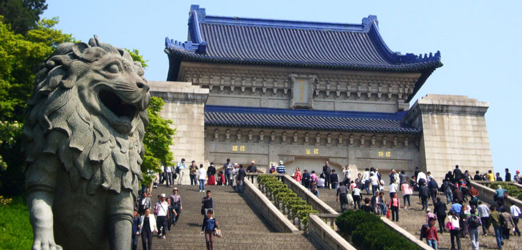

请在支付完成页面的【完成】按钮下勾选“关注钟山旅行” 可再次进入服务号收听讲解

中山陵语音讲解
讲解内容
1
钟山风景区概述
2
中山陵--中国近代建筑史上第一陵
3
中山陵建筑探秘——博爱坊
4
中山陵建筑探秘——墓道
5
孙中山先生生平
6
中山陵历史探秘——国父为何葬于南京？
7
中山陵建筑探秘——陵门
8
中山陵建筑探秘——碑亭
9
中山陵建筑探秘——平台与石阶
10
中山陵历史探秘——千里艰辛，迎孙中山灵柩回南京
11
中山陵历史探秘——国父奉安大典，举国哀送孙中山
12
中山陵建筑探秘——祭堂（上）
13
中山陵建筑探秘——祭堂（下）
14
中山陵建筑探秘——墓室
15
中山陵历史探秘——中山陵设计者吕彦直一稿成名
16
中山陵历史探秘——乱世动荡，中山陵建设险度难关
17
中山陵历史探秘——孙中山遗体之谜
18
中山陵历史探秘——国父遗嘱的诞生
立即购买
实付款
¥10
 请在支付完成页面的【完成】按钮下勾选“关注钟山旅行” 可再次进入服务号收听讲解
请在支付完成页面的【完成】按钮下勾选“关注钟山旅行” 可再次进入服务号收听讲解
 请在支付完成页面的【完成】按钮下勾选“关注钟山旅行” 可再次进入服务号收听讲解
请在支付完成页面的【完成】按钮下勾选“关注钟山旅行” 可再次进入服务号收听讲解